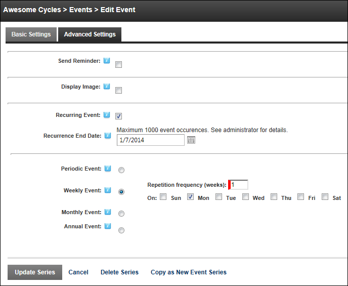

Enabling/Disabling and Configuring Recurring Events
How to enable or disable recurring events and configure the optional settings for the Events module. Note: Recurrences days are localized.
- Commence adding a new event (See "Adding an Event") but don't Update until completing the below steps - OR - Edit an existing event. See "Editing an Event"
- Go to the Recurring Event section.
- At Recurring Event, select from these options:
- Mark
 the check box to set the event as recurring.
the check box to set the event as recurring.
- At Recurrence End Date, click the Calendar
 button and select the last date when the event will reoccur. (See "Working with the Calendar"). Note: Event Start Date must occur before the recurrence end date in order for the event to occur at least once
button and select the last date when the event will reoccur. (See "Working with the Calendar"). Note: Event Start Date must occur before the recurrence end date in order for the event to occur at least once - Select and set one of the following reoccurrence schedules:
- To set the event to reoccur periodically:
- Select Periodic Event.
- At the Repeated every field, enter the frequency of the reoccurrence into the text box, and then select either Day(s), Weeks(s), Month(s), or Year(s) to set the period of the recurrence. The default setting is every 1 day.
- To set the event to reoccur weekly:
- Select Weekly Event.
- In the Repetition Frequency (Weeks) text box, enter how frequently the event occurs each week.
- Check
 the check box for each of the day the event reoccurs.
the check box for each of the day the event reoccurs.
- To set the event to reoccur once each month:
- Select Monthly Event.
- At Repeated on select the week in which the event reoccurs in the month. Options are First, Second, Third, Fourth and Last. The default setting is First.
- Select the day of the month when the event reoccurs. The default setting is Sunday.
- To set the event to reoccur on a specific date of each month:
- Select Monthly Event.
- At Repeated On Day, select the date of the month when the event is repeated. The default setting is 1st.
- In the Repetition Frequency (Months) text box, enter the number of months that the event reoccurs for. E.g. Enter 1 for an event which reoccur each month, or 2 for an event which reoccur every second month.
- To set the event to reoccur annually:
- Select Annual Event.
- At Repeat On Date, click the Calendar button and select the date. See "Working with the Calendar"
- Unmark
 the check box to set the event as a one time event. Note: Saved settings are retained for future use.
the check box to set the event as a one time event. Note: Saved settings are retained for future use.
-
Click the OK button to confirm.

Tip: Recurring events display the Recurring Event icon which reveals more details of the recurrence schedule when a user hovers their mouse over the icon.
Tip: You can either edit individual instances of recurring events or the full event series.

Weekly recurring event displayed in the Calendar week